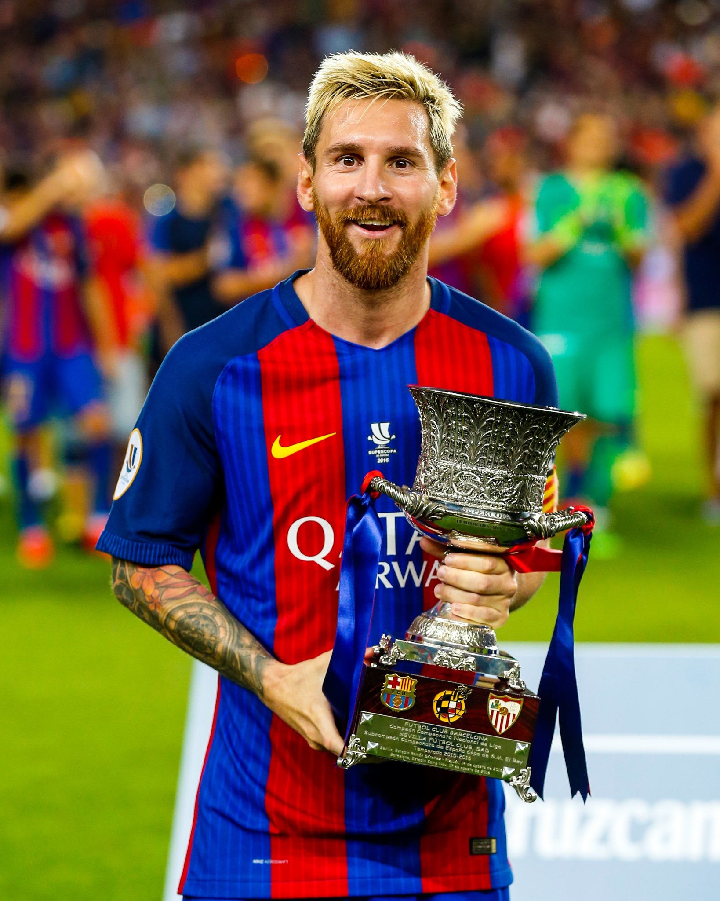
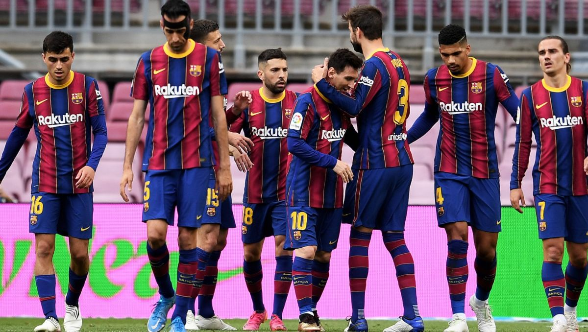
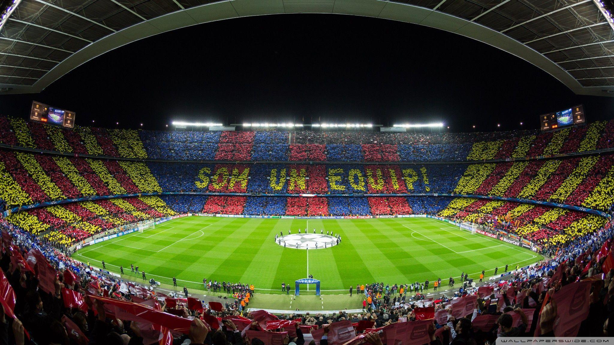
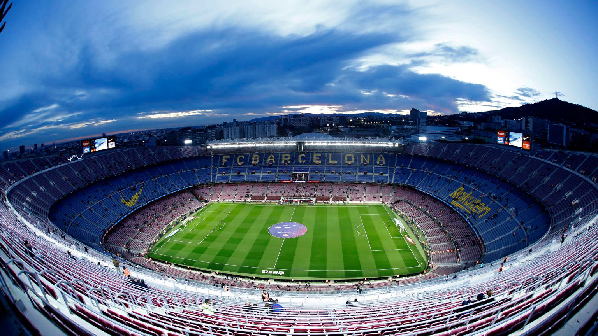
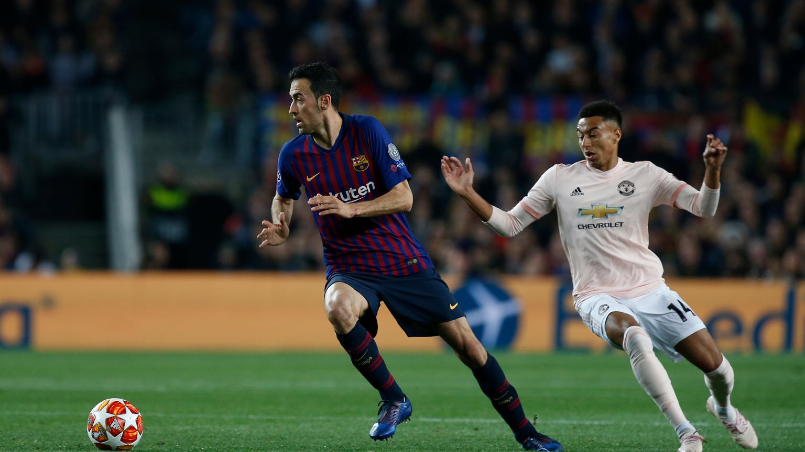
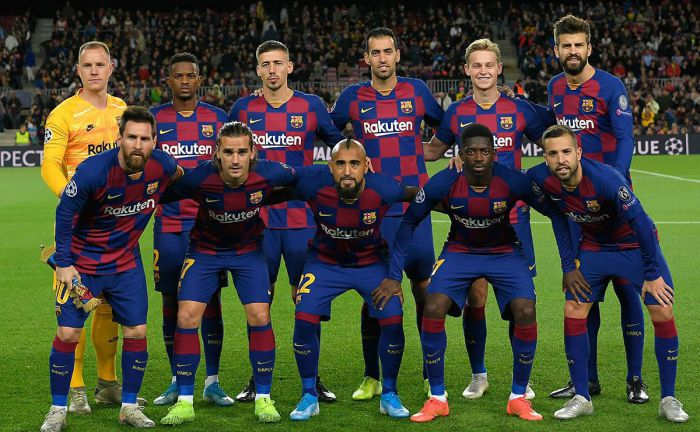

Leo Messi: Pewnego dnia wrócę, bo Barcelona to mój dom
Leo Messi we łzach pożegnał się z FC Barceloną. Wyjaśnił powody swojego odejścia,
podziękował za wiele wspaniałych lat oraz zapowiedział, że pewnego dnia wróci do klubu,
który jest jego domem. Zapraszamy do zapoznania się z zapisem konferencji prasowej.

Lionel Messi
Na początek przemawiał Messi: Prawdę mówiąc nie wiem, czy będę w stanie mówić.
Zastanawiałem się, co powiem. Nic nie przychodziło mi do głowy. Wciąż jestem
przyblokowany. To wszystko jest dla mnie bardzo trudne po tylu latach. Spędziłem tu całe
życie. Nie byłem na to przygotowany. W poprzednim sezonie, przy całym zamieszaniu z
burofaksem byłem gotowy, przekonany, wiedziałem, co powiedzieć. Teraz nie. Teraz
chcieliśmy zostać tutaj, w naszym domu. Zawsze stawialiśmy na pierwszym miejscu nasze
dobro, pozostanie w domu i cieszenie się życiem tutaj. Dziś muszę się pożegnać.
Przybyłem tu w wieku 13 lat. Po 21 latach odchodzę z żoną, z trzema
Katalończykami-Argentyńczykami. Nie mogę być bardziej dumny z tego, co zrobiłem. Jestem
pewny, że po kilku latach wrócimy. To nasz dom, obiecałem to synom. Dziękuję wszystkim,
kolegom, ludziom z klubu. Tym, których widzimy, i tym niewidocznym. Starałem się
traktować wszystkich z szacunkiem. Mam nadzieję, że to po mnie pozostanie. To były
piękne chwile, także złe, ale dzięki nim rozwinąłem się i stałem się osobą, którą jestem
dziś. Dałem wszystko dla tego klubu i tej koszulki. Od pierwszego do ostatniego dnia.
Wolałbym żegnać się w inny sposób. Nigdy nie wyobrażałem sobie pożegnania, a już na
pewno nie takiego. Chciałbym zrobić to na boisku, z kibicami na trybunach, z ich
ostatnią owacją. Czas pandemii był trudny, graliśmy przy pustych trybunach. Świętowanie
z fanami, słuchanie, jak krzyczą moje imię… Gdybym miał wyobrazić sobie moje pożegnanie,
to z pełnymi trybunami. Jest jednak inaczej. Jestem wdzięczny za wszystkie ciepłe
uczucia przez te lata. Mam nadzieję, że pewnego dnia wrócę i będę częścią tego klubu, że
będę mógł się w czymś przydać, by Barcelona dalej była najlepsza na świecie. Na pewno
zapominam teraz wiele rzeczy, które chciałbym powiedzieć. Nie jestem w stanie myśleć.
Najlepiej przejdźmy do pytań. Dziękuję wszystkim.

Hiszpański rząd zgodził się na powrót kibiców na stadiony

Zbliżający się sezon LaLigi rozpocznie się z udziałem publiczności. Ogłosiła to
hiszpańska minister zdrowia Carolina Darias po spotkaniu Międzyregionalnej Komisji
Zdrowia. Kibice Barcelony najprawdopodobniej wrócą więc na Camp Nou przy okazji
pierwszego meczu Primera División z Realem Sociedad.

Widok z trybun Camp Nou
Darias poinformowała o czasowym zawarciu przez Ministerstwo Zdrowia i władze lokalne
porozumienia ws. powrotu kibiców na trybuny. – Środki zawarte w tym porozumieniu są
wspólne dla całego terytorium Hiszpanii na najbliższe trzy tygodnie od 13 do 29
sierpnia. Dozwolona będzie maksymalna frekwencja wynosząca 40% pojemności danego
stadionu.
Na co zwrócić uwagę w meczu o Puchar Gampera?
Mecz drużyny kobiecej oraz debiut Busquetsa w roli kapitana

Sergio Busquets
Tegoroczna edycja Pucharu Gampera jest wyjątkowa. O 18 swój mecz rozegrają bowiem
kobiece drużyny Barçy i Juve. Aktualne zdobywczynie Ligi Mistrzyń zmierzą się z mocnymi
rywalkami z Włoch, a spotkanie na pewno będzie ekscytujące. Później dojdzie do
prezentacji zespołu męskiego na kolejny sezon. Sergio Busquets zadebiutuje jako pierwszy
kapitan i oczekuje się, że zwróci się do kibiców, komentując w jakiś sposób odejście Leo
Messiego.

Na Estadi Johan Cruyff zasiądą tylko 3 tysiące kibiców, ale oni także będą mogli
wypowiedzieć się na temat ostatnich wydarzeń. Nie otrzymają szansy oklaskiwania Leo
Messiego, ale z pewnością mogą wyrazić swoje niezadowolenie wobec postawy niektórych
piłkarzy. Barcelonismo z pewnością jest wściekłe i smutne.